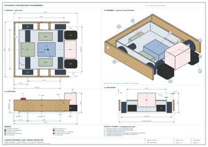

Le caisson 01 porte les quatre motoréducteurs et le capot. La batterie 04 est centrée et basse ; la commande 05 et les contrôleurs 06 restent accessibles. Les protections 03 en U et les pods 07 arrondis sont remplaçables. Le volume 08 reste neutralisé ; l’option P3 est un levage lent non coupant, sous revue de sécurité.
Repère / zone
Cote proposée (mm)
Statut / portée
Enveloppe
320 × 280 × 100
P · hauteur prise sur 08
01 Caisson
230 × 200 · X 25–255 · paroi 3
P · plancher 8 H
02 Roues / axes
Ø55 × 25 · X 70 / 235 · empattement 165
Ø H · implantation P
03 Protections
flancs X 0–280 · Y ±134 à ±140
P · U remplaçable
04 Batterie
X 120–210 · Y -35 à 35 · Z 14–49
P · volume réservé
08 Module avant
X 255–315 · Y -45 à 45 · Z 30–100
P · volume neutralisé
Capot retiré : implantation des sous-ensembles.Vue éclatée : logique de démontage et d’inspection.
Les dimensions sont P/H. Le modèle n’est pas une CAO de fabrication ; matériaux, fixations et jeux sont à qualifier sur les pièces reçues.
Conception préliminaire · 16 octobre 2026 2
HOTLINE MK-II R2 · Électronique fonctionnelle
Énergie, commande, arrêt
Une chaîne de puissance sectionnable alimente deux contrôleurs réversibles : un pour les deux moteurs gauches, un pour les deux moteurs droits. Le récepteur reçoit l’émetteur et une alimentation régulée compatible ; le mixage différentiel vient de la radio ou d’une carte identifiée. Perte radio, retour au neutre et sectionnement seront vérifiés avant usage.
Autonomie, cas d’étude H
1,5 Ah à 18 A : 5 min idéalement, 4 min avec réserve de 20 %. Pour le match : 14,4 A au plus, ou 1,875 Ah à courant inchangé.
Masse, allocation P
3850 g avec réserve ; 150 g sous 4000 g. Le CG calculé depuis des positions proposées est (169,71 ; 0 ; 37,89) mm E. Il n’est pas mesuré.
Les courants de pointe, tensions admissibles, protections et chargeur seront définis avec les fiches du kit et l’encadrant. Aucun brochage ni calibre n’est fixé dans ce schéma.
Conception préliminaire · 16 octobre 2026 3
HOTLINE MK-II R2 · Vues et plans
Lire le robot sous quatre angles
Vue de dessus : axes, caisson et modules.Vue de face : largeur et protections.Vue de côté : profil bas et garde au sol.Dimensions générales de l’enveloppe.
Plans 2D légendés
Repères 01 caisson, 02 roues/moteurs, 03 protections, 04 batterie, 05 commande, 06 contrôleurs, 07 pods, 08 volume réservé, 09 accès sectionnement, 10 capot. Les vues dessus, côté, face et ensemble sont réunies sur la planche A3.

Planche A3 : vues orthogonales, ensemble et repères.
L’option P3 est illustrée séparément : vue du levage lent. Les cotes de fabrication attendent les interfaces réelles.
Conception préliminaire · 16 octobre 2026 4
HOTLINE MK-II R2 · Réalisation et validation
Construire avec les moyens disponibles au Mali
La première étape est l’inventaire du kit DoniFab et de ses fiches techniques. Le caisson en PVC rigide, les protections légères et les renforts locaux sont des pistes à comparer selon la nuance, le délai, la tenue et le devis. Les quatre moteurs, les roues, la radio, les contrôleurs, la batterie, le chargeur, le sectionnement et les outils de contrôle sont envisagés ; aucun stock ni prix n’est présumé.
Les pages publiées donnent 1 robot par équipe, poids maximal de 4 kg, Combat en duel en arène hexagonale de 5 minutes, Sécurité obligatoire ; aucun robot activé hors arène. Elles ne précisent pas le contenu du kit, les dimensions maximales, les batteries ni les mécanismes admis. Ces points seront demandés à DoniFab le 17 octobre. Aucun prototype, essai, pesée ou homologation n’est revendiqué.
Cinq rôles, six validations
Responsable
Travail
Preuve attendue
Membre 1
Exigences et coordination
V1 : règles et kit.
Membre 2
Mécanique et plans
V2 : cotes et jeux non alimentés.
Membre 3
Intégration et sécurité
Revue des fixations et du volume avant.
Membre 4
Propulsion et pilotage
V4 : commande/arrêt ; V5 : autonomie.
Membre 5
Budget, masse, documentation
V6 : pesée complète ; devis sourcés.
Encadrant
Compatibilité et protections
V3 : revue électrique avant alimentation.
Jalons proposés jusqu’au 7 novembre
Période
Résultat attendu
17 oct.
Entretien et réponses officielles.
19–25 oct.
Inventaire, mise à jour des plans, V1/V2, liste d’achats.
26 oct.–1er nov.
Assemblage selon kit, V3 et gel de configuration.
2–6 nov.
Essais autorisés V4/V5, V6, corrections.
7 nov.
Phase éliminatoire publiée, sous consignes des officiels.
Option P3 : principe de levage lent non coupant, sous revue.